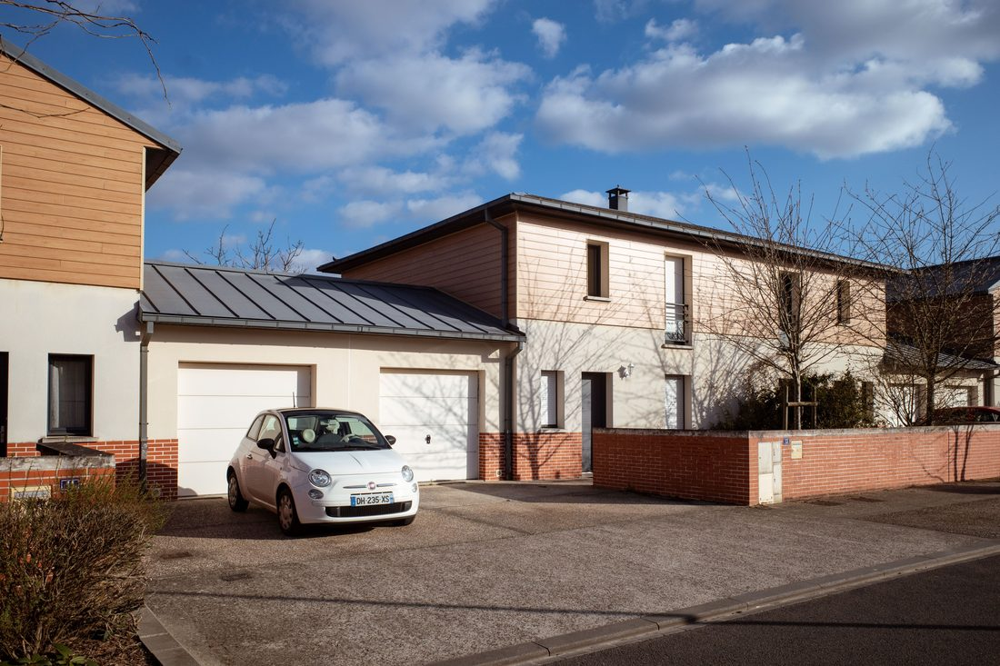
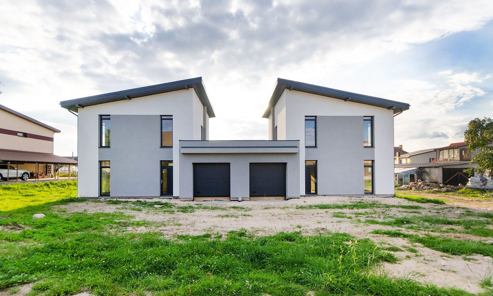
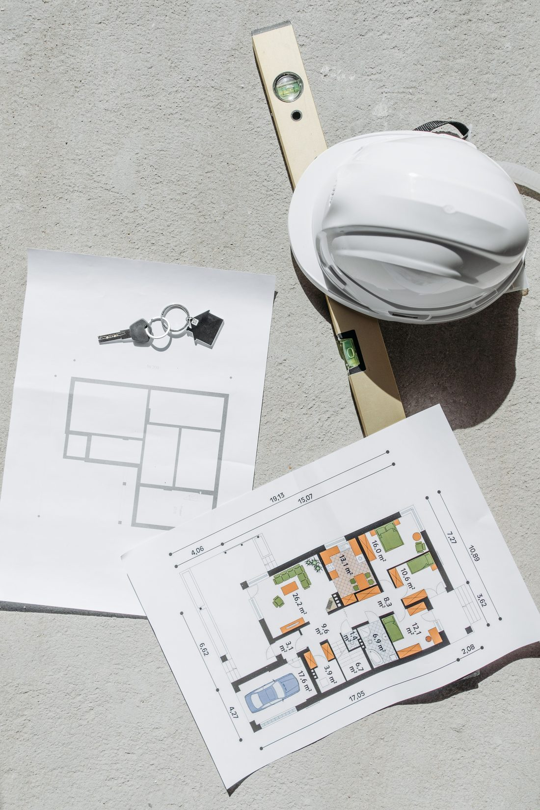
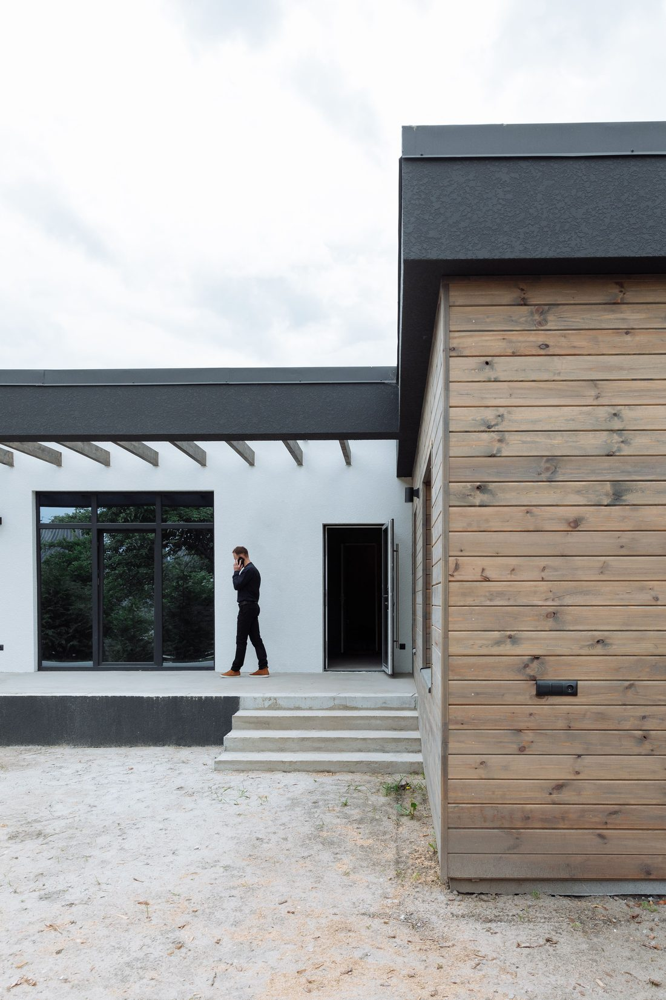

Constructeur de maison individuelle ou maître d'œuvre ?
Pour faire construire une maison neuve, deux voies principales existent : passer par un constructeur de maison individuelle, ou faire appel à un maître d'œuvre. Elles reposent sur des logiques très différentes.

Le contrat de construction de maison individuelle (CCMI)
Le CCMI est un contrat encadré par la loi, qui lie le client à un constructeur unique. Celui-ci propose généralement un catalogue de modèles ou de plans types, adaptables à la marge, pour un prix et un délai fixés contractuellement dès la signature.
Le constructeur pilote lui-même les travaux, le plus souvent en sous-traitant à des entreprises qu'il sélectionne seul. Le client n'a généralement pas de visibilité sur le choix de ces entreprises, ni sur la marge que le constructeur applique à chaque lot de travaux : le prix global reste fixe, mais sa composition n'est pas détaillée.

Le maître d'œuvre : une maison sur mesure, à votre service
Avec un maître d'œuvre, il n'y a pas de contrat unique global : vous signez un contrat de maîtrise d'œuvre pour la conception et le pilotage, puis un contrat séparé avec chaque entreprise retenue pour chaque corps de métier. Cette organisation change tout : le maître d'œuvre ne réalise pas lui-même les travaux et n'a donc aucun intérêt financier à privilégier telle entreprise plutôt qu'une autre. Son seul rôle est de défendre vos intérêts face aux entreprises.
Cette indépendance permet une vraie mise en concurrence, lot par lot : plusieurs devis sont comparés pour chaque poste (gros œuvre, charpente, électricité, plomberie...), avec une visibilité complète sur ce que coûte chaque prestation.

Les avantages du maître d'œuvre
- Un projet sur mesure : la conception s'adapte à votre terrain, à son orientation, à ses contraintes et à vos envies, sans être limitée à un catalogue de modèles.
- Une indépendance totale : le maître d'œuvre travaille exclusivement pour vous, sans lien financier avec les entreprises du chantier.
- Une transparence sur les coûts : chaque lot de travaux est chiffré et mis en concurrence séparément, plutôt que noyé dans un prix global forfaitaire.
- De la flexibilité en cours de projet : un ajustement de plan ou de matériau reste possible, discuté directement avec vous et l'entreprise concernée.
- Un accompagnement qui ne se limite pas au neuf : contrairement au CCMI, réservé à la construction d'une maison individuelle neuve, un maître d'œuvre intervient aussi sur les projets de rénovation, d'extension ou de surélévation.

Un point de vigilance à connaître
Le CCMI offre des garanties légales propres à ce contrat, notamment la garantie de livraison à prix et délais convenus : si le constructeur ne respecte pas ses engagements, cette garantie prend le relais. Un contrat de maîtrise d'œuvre ne reproduit pas cette garantie sous la même forme, puisque les travaux sont répartis entre plusieurs entreprises indépendantes.
C'est pourquoi un maître d'œuvre sérieux compense ce point par un cadrage rigoureux dès le départ : devis détaillés par lot, contrats clairs avec chaque entreprise, planning précis et suivi de chantier régulier, pour limiter les mauvaises surprises tout au long du projet.
Un projet de construction en tête ?
Parlons-en sans engagement, avant même que les plans existent.
Nous contacter